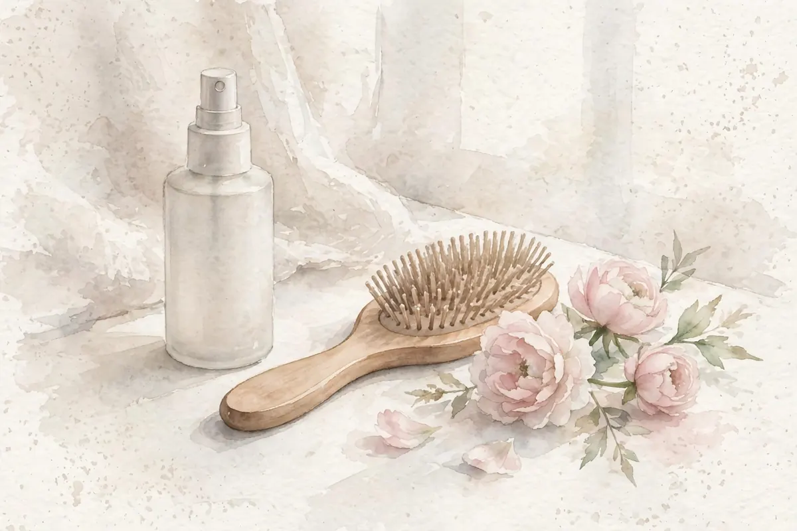

トップ ＞ ヘアケア ＞ ヘアフレグランスの使い方と付ける場所
ヘアフレグランスの使い方と付ける場所

ヘアフレグランスは、髪に香りをつけるためのアイテムです。香水とは違い、髪の毛に直接使うことを前提に作られています。売り場では、スプレータイプやミストタイプのものが多く、「髪の香りづけ」といった案内が書かれています。この記事では、ヘアフレグランスの使い方と付ける場所を整理します。特定の商品の話ではなく、表示の読み方と付け方の考え方です。私自身、新しい香りのアイテムを手に取るときは、まずこの表示を確認するようにしています。
付ける場所は毛先と内側が中心
ヘアフレグランスを付けるとき、まず考えるのは「どこに付けるか」です。基本になるのは、毛先と髪の内側です。毛先は、髪が動くたびに香りが広がりやすい場所です。髪の内側は、香りがこもりやすく、自分の周りで長く感じられる場所です。頭皮の近くや、顔のまわりの前髪には、直接つけないのが基本です。頭皮に近い場所は、香りが強く感じられやすく、目や鼻への刺激にもつながります。
付け方は、スプレーを髪から少し離して、全体に軽く吹きかける形が一般的です。表示の「使用方法」の欄にも、「髪から20センチほど離してお使いください」といった距離の案内が書かれていることがあります。近づけすぎると、一か所に集中して香りが強くなります。離して吹くことで、香りが広く、薄く広がります。私は、まず髪の内側に一度、毛先に一度、というように、場所を分けて吹くようにしています。
ロングヘアの場合は、髪を一度持ち上げて、内側に吹きかける方法もあります。内側に付けた香りは、外側からは見えませんが、髪を動かしたときにふわりと広がります。ショートヘアの場合は、毛先全体に軽く一度吹くだけで十分なことが多くあります。髪の長さや量によって、付ける回数は変わります。まずは少ない回数から始めて、香りの広がり方を確かめるのが基本です。
量の目安は「少ない方から」
ヘアフレグランスの量の表示は、「適量を髪全体に」といった書き方が一般的です。具体的な回数が書かれていることは少なく、「2〜3プッシュ」といった案内があるものもあります。量の目安は、香りの強さで決めます。最初は1プッシュだけにして、しばらく時間を置いてから香りの広がりを確認します。足りなければ、もう1プッシュ足す、という使い方です。
一度にたくさん付けると、香りが強くなりすぎて、周りの人にも気づかれやすくなります。香りは、付けた直後が一番強く、時間がたつにつれて弱くなります。付けた直後に「ちょうどいい」と感じる量は、しばらくすると弱く感じることがあります。反対に、付けた直後に「少し強い」と感じる量は、時間がたてば落ち着きます。量の判断は、付けた直後ではなく、少し時間を置いてからするのがコツです。
香水やボディミストと一緒に使う場合は、香りの重なりにも気を配ります。同じ香りの系統でそろえる、香水は少なめにしてヘアフレグランスを主役にする、といった分け方が考えられます。香りのアイテムを重ねるときは、ひとつずつ量を控えめにして、全体のバランスを見るのが基本です。表示の「使用方法」の欄に、ほかの香りアイテムとの併用についての案内が書かれていることもあります。
香りの重ね方と時間帯
ヘアフレグランスの香りは、時間とともに変わります。付けた直後の香りと、しばらくたってからの香りは、同じものではありません。朝に付ければ、日中の髪の動きと一緒に、少しずつ広がります。夜のお出かけの前に付ければ、短い時間で香りを楽しむ使い方ができます。使う時間帯によって、量の目安も変わります。朝は控えめに、夜は少し多めに、という分け方も考えられます。
季節によっても、香りの感じ方は変わります。湿度の高い季節は、香りが広がりやすく感じられます。空気が乾く季節は、香りがこもりやすく感じられます。季節の変わり目は、量の目安を見直す機会です。同じ回数でも、季節によって香りの広がりが違うことを、頭に入れておいてください。
保管も、表示の確認ポイントです。「直射日光を避けて保管する」「高温になる場所を避ける」といった案内が書かれていることがあります。スプレーの口まわりは、使い終わったあとに拭き取ると清潔に保てます。香りのアイテムは、肌に合わないと感じたときは使用をいったんやめて、気になる場合は専門家に相談してください。この記事は使い方の案内であり、商品ごとに表示がある場合は、そちらが優先です。
セラフィナ「香りは髪の動きと一緒に広がるよ。付ける場所を決めて、少ない量から少しずつ試してみてね」